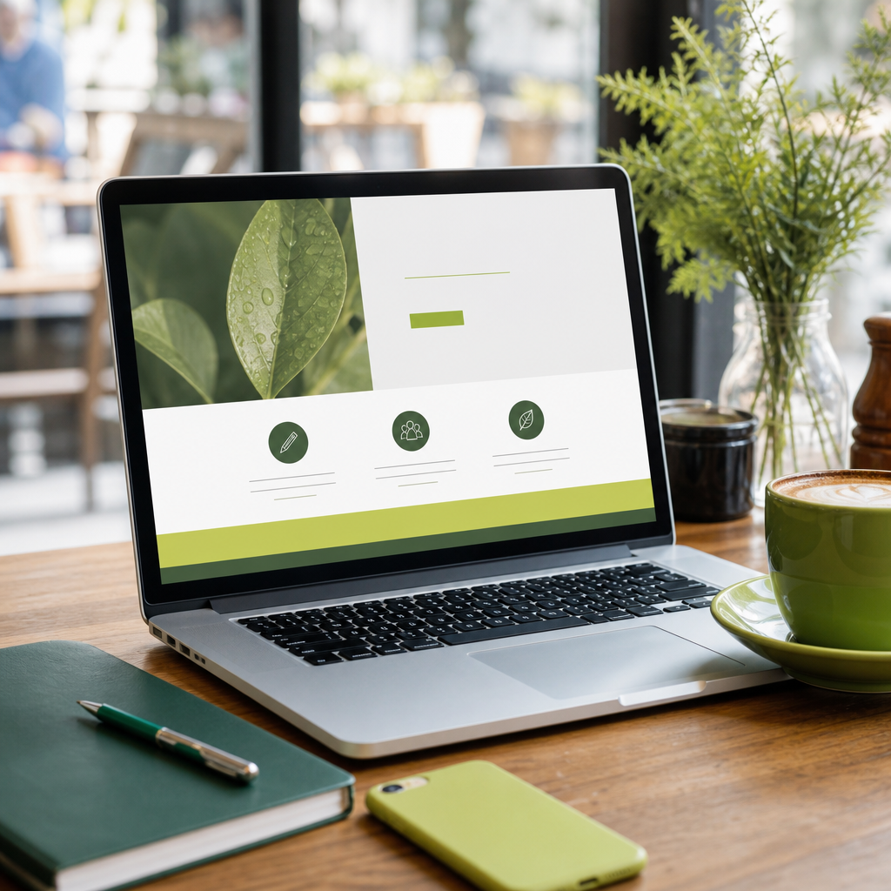

Case study · Website
Site Machinery — website for an equipment supplier
A trade supplier needed a clear online presence customers and search engines could find — without locking the brand into monthly website-builder rent.
Problem
Be found without renting the site
Equipment and machinery buyers look online first. The business needed a mobile-ready site with clear contact paths and local discoverability — owned code, not another SaaS landlord.
What we built
Owned Essential Site
- Custom mobile-ready website on sitemachinery.nz
- Crawler-ready structure for Google, Bing, and AI assistants
- Click-to-connect contact paths
- Client owns the code and hosting arrangement — no monthly builder fee
Related: Essential Site from $351 · Web & Digital · Cost compare
Outcome
Live proof of local web delivery
Site Machinery is a live Golden Bay / Tasman portfolio example of GBTech’s ownership model: one-time build, free hosting, brand in accounts the client controls.
Need a site you own?
Essential Sites start at $351. Booking portals and custom systems are scoped separately.